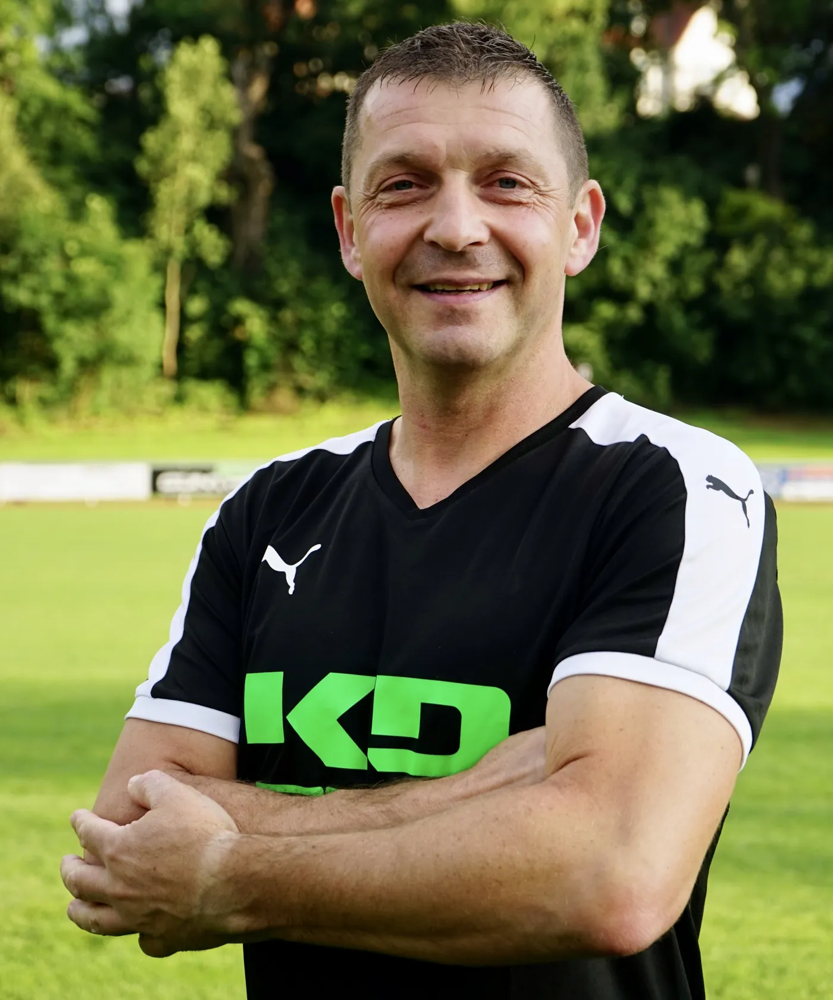
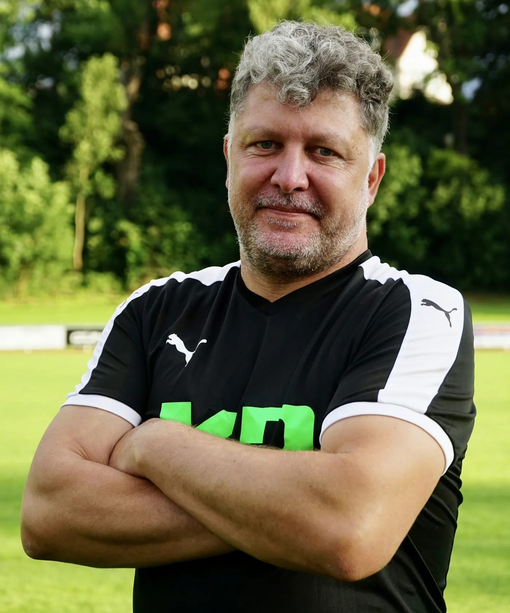
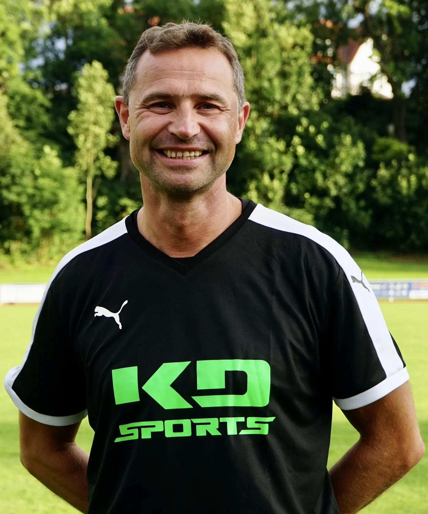
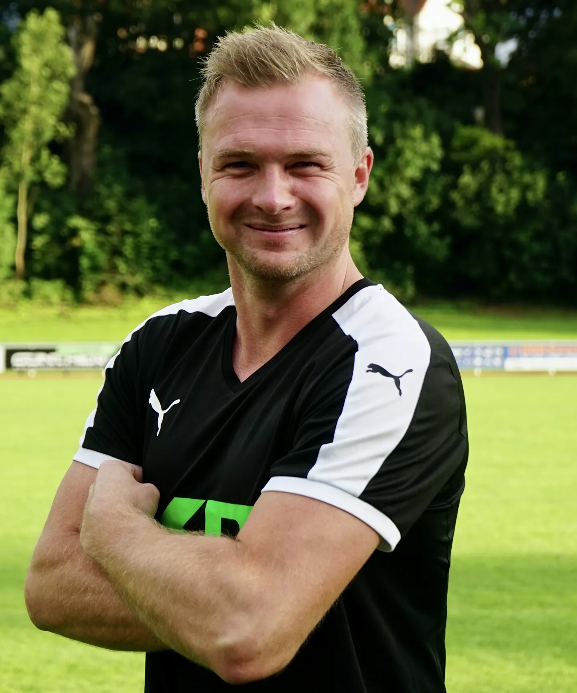

Tor
1Marco Volkwein
Feldspieler
2Mathias Siebert
4Ronald Leonhardt
5Bernhard Heinevetter
6Michael Apel

7Stefan Lerch8Michael Stellmann

9Stefan Hoch10Marco Wehr
11Thorsten Jünemann

12Markus Kruse13Frank Hottenrott
14Steffen Reinhardt
15Michael Grimm
16Andreas Eib

19Thomas Siebert20Stefan Rohner
21Stefan Hahne